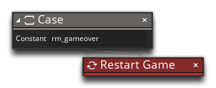

Most of the text we've just added can't be seen, as we haven't actually added any DnD™ to change between the different rooms. We'll do that now, by adding in a method to detect the press of the key to start/restart the game, depending on the room the player is in.
To start with, in the object "obj_game", add a Keyboard Pressed Event for the Enter key:
This event will check for the keypress. When a press is detected we want to run a Switch on the room variable to see what action should be taken, so add a Switch now, like this:
Now we'll add a Case for the room "rm_start", followed by the Go To Room from the Rooms section of the toolbox. This tells GameMaker Studio 2 that we should go to the room "rm_game" if we are in the room "rm_start":
The next Case to add is the one for the room "rm_gameover", and in this one we'll add the Restart Game action, as we want the game to start again after the player dies:

You can copy this Case and paste it in again, then change the constant to "rm_win", so that the full switch will look like this:
We want to add in some more DnD™ now to detect the "win" and "lose" conditions, which in the case of our game is going to be getting 1000 points for the score to win, or 0 lives to lose. So, we'll want to first check that the current room is the game room (we don't want to perform these checks in any other room), and then we want to check the lives and score variables. This requires us to add a Step Event into the controller object:
In this event we are first going to use the If Variable... action to check if the current room is the game room, and if it is, we're going to check the two variables, score and lives to see if the score is greater than (or equal to) 1000 or the lives are less than (or equal to) 0. For that we'll use the following DnD™ which you should add as shown:
Here we are using the If Score... and If Lives... actions to check the two variable values and then go to the appropriate room as required, but only in the main game room.
To test this you could always just play the game for a while and try to get the win and lose states, but there is an easier way. Open up the Create Event of the object "obj_game" and change the initial score and laves values to 990 and 1 respectively - the event actions should look like this:
And now if we test the game we will get the "Win" and "Game Over" screens depending on whether we shoot an asteroid or crash into it:
Click the "Next" button to continue on to the last chapter, where we'll add some polish to the overall gameplay...